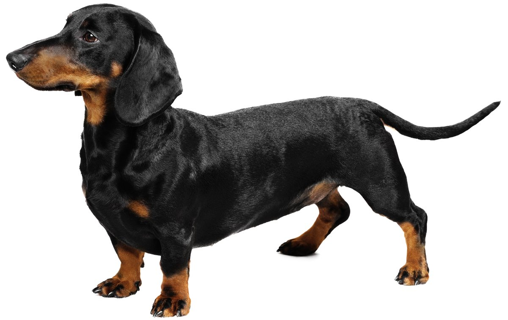
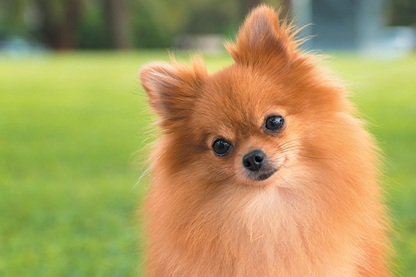
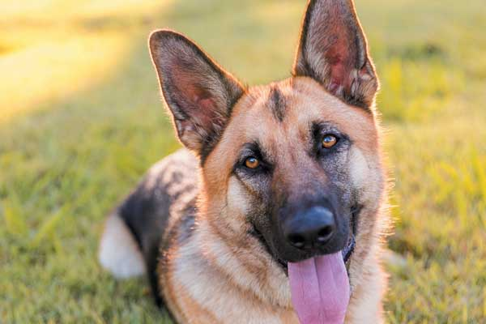
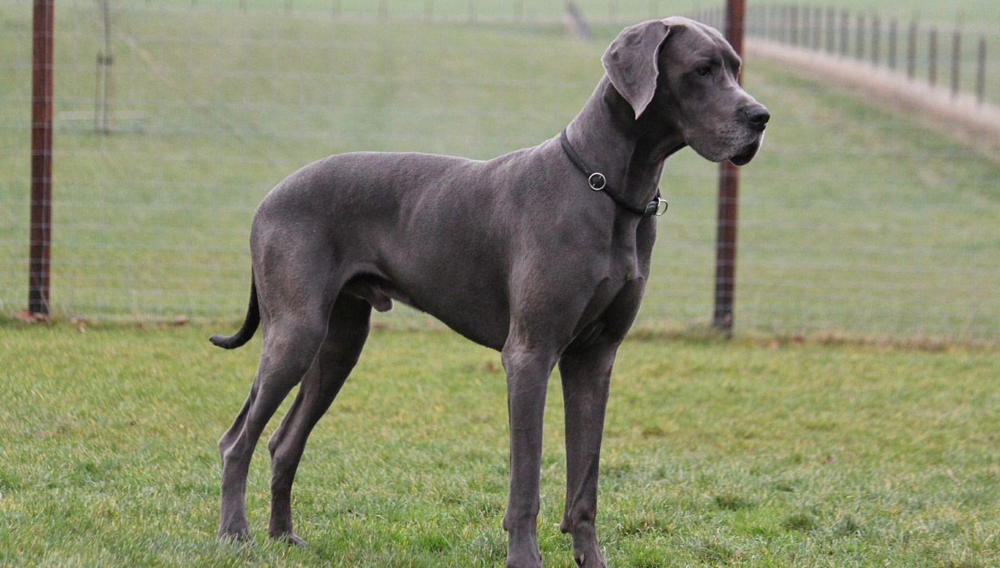

Small Dogs
most popular dogs

Average Lifespan: 12-15 years.
Average Weight: 4-6 lbs.- 
Average Lifespan: 12-16 years.
Average Weight: 16-33 lbs. Average Lifespan: 14-17 years.
Average Weight: 6-17 lbs.
Average Lifespan: 10-16 years.
Average Weight: 9-16 lbs.
Average Lifespan: 12-15 years.
Average Weight: 11-18 lbs.Average Lifespan: 10-18 years.
Average Weight: 3-6 lbs.
Average Lifespan: 12-15 years.
Average Weight: 14-18 lbs.- 
Average Lifespan: 12-16 years.
Average Weight: 3-7 lbs.
Large Dogs
most popular dogs

Average Lifespan: 10-14 years.
Average Weight: 60-80 lbs.- 
Average Lifespan: 10-14 years.
Average Weight: 75-95 lbs. Average Lifespan: 10-12 years.
Average Weight: 55-75 lbs.Average Lifespan: 12-15 years.
Average Weight: 45-70 lbs.Average Lifespan: 8-10 years.
Average Weight: 77-132 lbs.Average Lifespan: 12-17 years.
Average Weight: 45-75 lbs.- 
Average Lifespan: 7-10 years.
Average Weight: 100-200 lbs. 
Average Lifespan: 6-10 years.
Average Weight: 130-220 lbs.